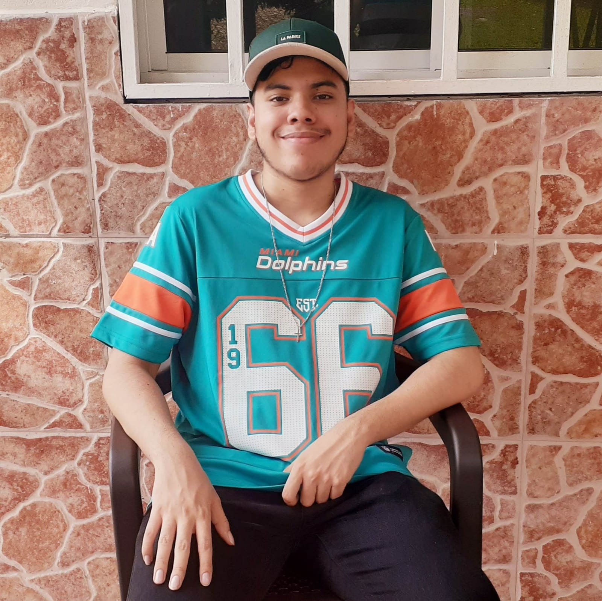

Gabriel Martínez
Hola, soy Gabriel Martínez nací en Panamá, Ciudad de Panamá el 21 de mayo de 2002. Mi mamá se llama Guadalupe Rudy y es profesora de historia en la Universidad de Panamá y mi papá se llama Gabriel Martínez y es Abogado y jefe del departamento de recursos humanos de Senafront. Mis experiencias en programación se limitan solo a los proyectos y tareas que he realizado en los cursos de la carrera, por lo que los lenguajes que mejor manejo son C, C++ y Java. Siendo java con el que más he trabajado y en el que he desarrollados mis habilidades a la hora de programar y el que más me ha gustado. El proyecto más complejo que he realizado fue un sistema de matricula para una escuela, en el que se podia ver el nombre de los profesores, matricular y retirar materias y otras opciones que no recuerdo. Ya en html, solo he tenido algunas experiencias bastantes básicas en el curso de globalización del software.